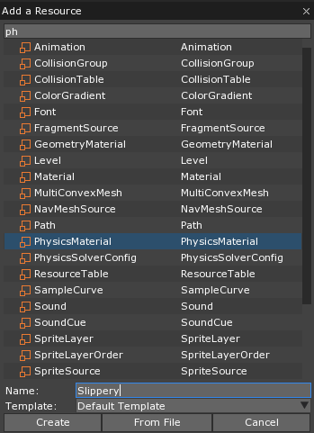
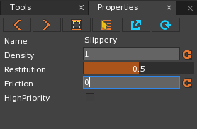
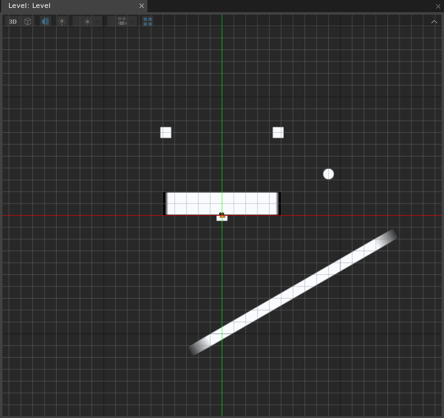
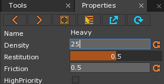
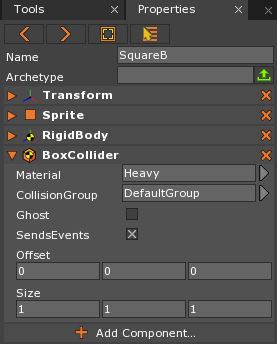

Resources
This lesson covers creating new Physics Materials and applying them to objects. Friction, density, restitution, and the Rotation Locked setting on the RigidBody component are also covered.
Learning Objectives
- Learn the concept purpose of resources.
- Be able to apply
PhysicsMaterials.
| Vocabulary | ||
|---|---|---|
| Resource | PhysicsMaterial | Friction |
| Restitution | Density | |
Level Setup
Create a Ball
- Command :
CreateSpriteor - Select the newly created Sprite object
- In the Properties Window
- Set Name to: Ball
- Add the RigidBody component
- Add the SphereCollider component
- Under Transform
- Set Translation to: [9, 3.5, 0]
- Under Sprite
- Set SpriteSource to: Circle
- Under SphereCollider
- Set Radius to: 0.5
Create a Slope
- Command :
CreateSpriteor - Select the newly created Sprite object
- In the Properties Window
- Set Name to: Slope
- Add the RigidBody component
- Add the BoxCollider component
- Under Transform
- Set Translation to: [6, -6.5, 0]
- Set Rotation to: [0, 0, 30]
- Set Scale to: [20, 1, 1]
- Under RigidBody
- Set DynamicState to: Static
- In the Objects Window
- In the Properties Window
- Under Camera
- Set Size to: 30
- Under Camera
Here is how the level should look after our initial setup:
{kind=link}
The Ball object falls onto and rolls down the Slope object.
Resources Overview
Resources are special objects shared throughout the engine, such as SpriteSources and Sounds. Unlike components, changing properties of a resource affects all those game objects who reference it due to its shared nature. Most resources are added via the Add command, although certain tools, such as the TileEditor2D, can create them as well. All created Resources can be found in the Library window.
Physics Materials
Physics Materials are resources that determine the density, restitution (bounciness), and friction of an object.
Friction
Friction is the what you feel when you try to push something across a surface. When there is a lot of friction (i.e. sandpaper), it is hard to push an object; when there is little (i.e. polished wood), it is easier to push an object.
Friction is the force applied on an object when it touches another object. Friction always acts in the opposite direction of movement (or attempted movement). For example, in order to push a box sitting on a table, the pushing force applied on the box would have to be greater than the friction generated by the box touching the table. The properties of both the box’s surface and the table’s surface will determine how much resistive force (friction) will be present between them. In the Zero Engine the PhysicsMaterial’s Friction property is used with calculations for the the normal force to simulate this effect.
Adding a PhysicsMaterial
Command :
AddorIn the Add Window
Select PhysicsMaterial
Set Name to: Slippery

Click the Create button
The newly created Slippery PhysicsMaterial should open in the Properties Window.
In the Properties Window
Set Friction to: 0

In the Properties Window
- Under BoxCollider
- Set Material to: Slippery
- Under BoxCollider
This time the Ball object slides down the Slope object faster than before. Having less friction means that a lesser amount of force is required for movement between the touching objects.
Restitution
The PhysicsMaterial’s Restitution property can be thought of as the bounciness, but it is actually the value representing the percentage of energy retained when a collision happens. If an object was moving fast when it collided with another object, how much of its speed will be retained after the collision? The restitution value will contribute to the outcome of these scenarios.
The following diagram attempts to briefly summarize how the collision will be resolved in the situation where there is no restitution (bounciness):
{kind=link}
Beware of setting Restitution above 1 as the speed of the objects can become out of control fast!
- Add a new PhysicsMaterial resource named: ‘Bouncy’
- In the Properties Window
- Set Restitution to: 1
- Select the Ball object
- In the Properties Window
- Under SphereCollider
- Set Material to: Bouncy
- Under SphereCollider
- In the Properties Window
- Save the project and run the game
The Ball object now has the Bouncy PhysicsMaterial instead of the DefaultPhysicsMaterial PhysicsMaterial, so it bounces more due to the higher restitution value. Here is the Ball object bouncing higher than previously:
{kind=link}
High Priority
Two colliding objects will have their own restitution values based on their PhysicsMaterial, but the restitution value used will be whichever one is larger. This will be true if both PhysicsMaterials’ HighPriority property is the same (both are True or both are False). If only one of the PhysicsMaterials’ HighPriority property is set to True, then that PhysicsMaterial’s restitution will be used.
Density
The mass of an object is determined by the density times the volume of the object. This means that two objects can be the same size, but if one of those objects is more dense, then that object will be “heavier” than the other. The following diagram attempts to briefly summarize the situation:
{kind=link}
Create SupportBlock
- Command :
CreateSpriteor - Select the newly created Sprite object
- In the Properties Window
- Set Name to: SupportBlock
- Add the RigidBody component
- Add the BoxCollider component
- Under RigidBody
- Set DynamicState to: Static
Create BalanceBar
- Command :
CreateSpriteor - Select the newly created Sprite object
- In the Properties Window
- Set Name to: BalanceBar
- Add the RigidBody component
- Add the BoxCollider component
- Under Transform
- Set Translation to: [0, 1, 0]
- Set Scale to: [10, 2, 1]
Create Squares
- Command :
CreateSpriteor - Select the newly created Sprite object
- In the Properties Window
- Set Name to: SquareA
- Add the RigidBody component
- Add the BoxCollider component
- Under Transform
- Set Translation to: [-4.5, 7, 0]
- Copy and Paste SquareA
- In the Properties Window
- Set Name to: SquareB
- Under Transform
- Set Translation to: [4.5, 7, 0]
- Save the project
This setup will allow us to see the results of setting an object’s PhysicsMaterial to a PhysicsMaterial with a higher density.
Here is what the level should look like:

The SquareA and SquareB objects should fall and land on the BalanceBar object:
{kind=link}
The BalanceBar object does not tip over because both objects have the same volume and density, which results in the same mass.
Add a new PhysicsMaterial resource named: ‘Heavy’
In the Properties Window
Set Density to: 25

In the Properties Window
Under BoxCollider
Set Material to: Heavy

The SquareB object now has a larger density so the BalanceBar tips over:
{kind=link}
RigidBody Setting: Rotation Locked
Let’s experiment with the the RigidBody component.
What if we didn’t want our BalanceBar to rotate? What would happen if it couldn’t rotate?
- Select the BalanceBar object
- In the Properties Window
- Under RigidBody
- Set RotationLocked to: True
- Under RigidBody
- Save the project and run the game
{kind=link}
Notice the Heavy square still bounces higher
Because none of the energy could rotate the object, the blocks landed similarly to when they were of equal weight.
Now we know how to add resources, create new PhysicsMaterials, and alter the PhysicsMaterial properties and RigidBody settings that change the way objects interact with physics.